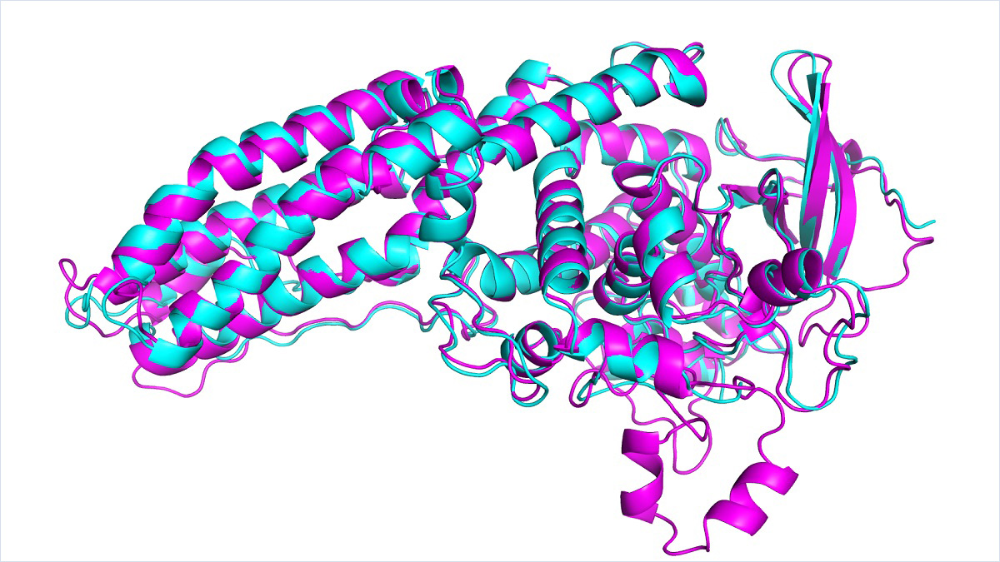

Chapter 1
Introduction to
Artificial Neural Networks
It is quite apparent that life imitates life and engineers are inspired by nature.
It seems only logical, then, to look at the brain’s architecture for inspiration on how to build an intelligent machine as it is the only intelligence that we know of.
This is the logic that sparked ANNArtificial Neural NetworksArtificial Neural Networkss, which are MLMachine LearningMachine Learning models inspired by the networks of biological neurons found in our brains. However, whereas planes were inspired by birds, they don’t have to flap their wings to fly. Similarly, ANNArtificial Neural NetworksArtificial Neural Networkss have gradually become quite different from their biological cousins. Some researchers even argue that we should drop the biological analogy altogether such as calling them units rather than neurons [†-3] Agatonovic-Kustrin, S & Beresford, R. Basic concepts of artificial neural network (ANN) modeling and its application in pharmaceutical research. Journal of pharmaceutical and biomedical analysis 22, 717–727 (2000), as some consider this naming to decrease the amount of creativity we can give to the topic. ANNArtificial Neural NetworksArtificial Neural Networkss are at the very core of deep learning. They are versatile, powerful, and scalable, making them ideal to tackle large and highly complex MLMachine LearningMachine Learning tasks such as classifying billions of images, [1] Such as google images. powering speech recognition services, recommending the best videos to watch to hundreds of millions of users every day, or learning to beat the world champion at the game of Go. [2] Such as DeepMind’s AlphaGo [†-4] Holcomb, S. D. et al. Overview on deepmind and its alphago zero ai in Proceedings of the 2018 international conference on big data and education (2018), 67–71.
We will treat this chapter as a formal introduction to ANNArtificial Neural NetworksArtificial Neural Networks, starting with a tour of the very first ANNArtificial Neural NetworksArtificial Neural Networks architectures and leading up to multilayer perceptrons, which are heavily used today. In the second part, we will look at how to implement ANNArtificial Neural NetworksArtificial Neural Networkss using TensorFlow’s Keras APIApplication-Programming InterfaceApplication-Programming Interface. This is a beautifully designed and simple high-level APIApplication-Programming InterfaceApplication-Programming Interface for building, training, evaluating, and running ANNArtificial Neural NetworksArtificial Neural Networks. While it may look simple at first glance, it is expressive and flexible enough to let you build a wide variety of neural network architectures.
For most of your use cases, using keras will be enough.
AlphaFold is an artificial intelligence (AI) program developed by DeepMind, which performs predictions of protein
[3] ¶ 
AlphaFold 1 (2018) placed in the overall rankings of the CASP [4] Critical Assessment of Structure Prediction. in December 2018. It was particularly successful at predicting the most accurate structures for targets rated as most difficult by the competition organizers, where no existing template structures were available from proteins with partially similar sequences.
AlphaFold 2 (2020) repeated this placement in the CASP14 competition in November 2020. It achieved a level of accuracy much higher than any other entry [†-6] Stoddart, C. Structural biology: How proteins got their close-up. Knowable Mag. (2022). It scored above 90 on CASP’s global distance test (GDT) for approximately two-thirds of the proteins, a test measuring the similarity between a computationally predicted structure and the experimentally determined structure, where 100 represents a complete match [†-5] Heaven, W. D. DeepMind’s protein-folding AI has solved a 50-year-old grand challenge of biology. MIT Technol. Rev. 30, 1–2 (2020). The inclusion of metagenomic data has improved the quality of the prediction of multiple sequence alignments. One of the biggest sources of the training data was the custom-built Big Fantastic Database of 65,983,866 protein families, represented as multiple sequence alignments and Hidden Markov models, covering 2,204,359,010 protein sequences from reference databases, metagenomes, and metatranscriptomes [†-7] Jumper, J. et al. Highly accurate protein structure prediction with AlphaFold. nature 596, 583–589 (2021).
1.1.1 Current Developments and Overview
1.1.2 Biological Neurons
1.1.3 Logical Computations with Neurons
1.1.4 The Perceptron
1.1.5 Multilayer Perceptron and Backpropagation
1.1.6 Regression MLPs
1.1.7 Classification MLPs
1.2 Implementing MLPs with Keras
1.2.1 Building an Image Classifier Using Sequential API
1.2.2 Creating the model using the sequential API
1.2.3 Building a Regression MLP Using the Sequential API
-
¶
- APIApplication-Programming Interface
Application-Programming Interface
-
¶
- MLMachine Learning
Machine Learning
-
¶
- ANNArtificial Neural Networks
Artificial Neural Networks
- 1.
- BBC. How a kingfisher helped reshape Japan’s bullet train 2019
- 2.
- Vincent, J. F. et al. Biomimetics: its practice and theory. Journal of the Royal Society Interface 3, 471 (2006)
- 3.
- Agatonovic-Kustrin, S & Beresford, R. Basic concepts of artificial neural network (ANN) modeling and its application in pharmaceutical research. Journal of pharmaceutical and biomedical analysis 22, 717–727 (2000)
- 4.
- Holcomb, S. D. et al. Overview on deepmind and its alphago zero ai in Proceedings of the 2018 international conference on big data and education (2018), 67–71
- 5.
- Heaven, W. D. DeepMind’s protein-folding AI has solved a 50-year-old grand challenge of biology. MIT Technol. Rev. 30, 1–2 (2020)
- 6.
- Stoddart, C. Structural biology: How proteins got their close-up. Knowable Mag. (2022)
- 7.
- Jumper, J. et al. Highly accurate protein structure prediction with AlphaFold. nature 596, 583–589 (2021)
- [1].
- Such as google images.
- [2].
- Such as DeepMind’s AlphaGo [†-4] Holcomb, S. D. et al. Overview on deepmind and its alphago zero ai in Proceedings of the 2018 international conference on big data and education (2018), 67–71.
- [4].
- Critical Assessment of Structure Prediction.